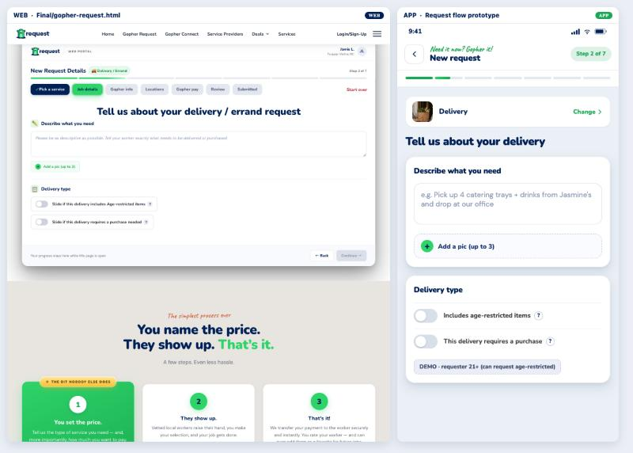
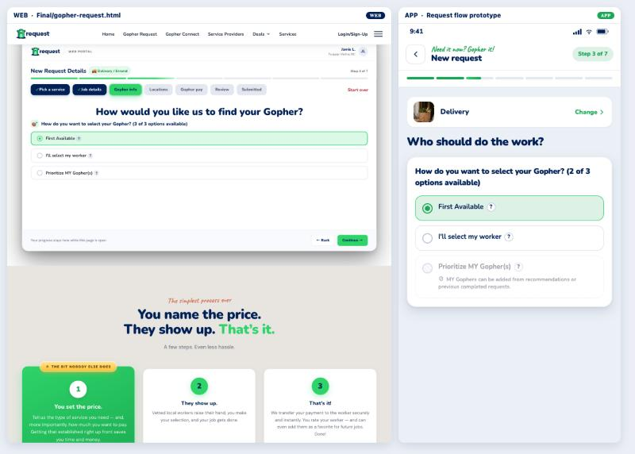
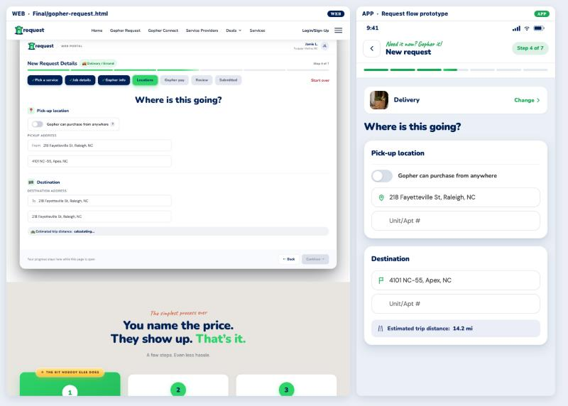
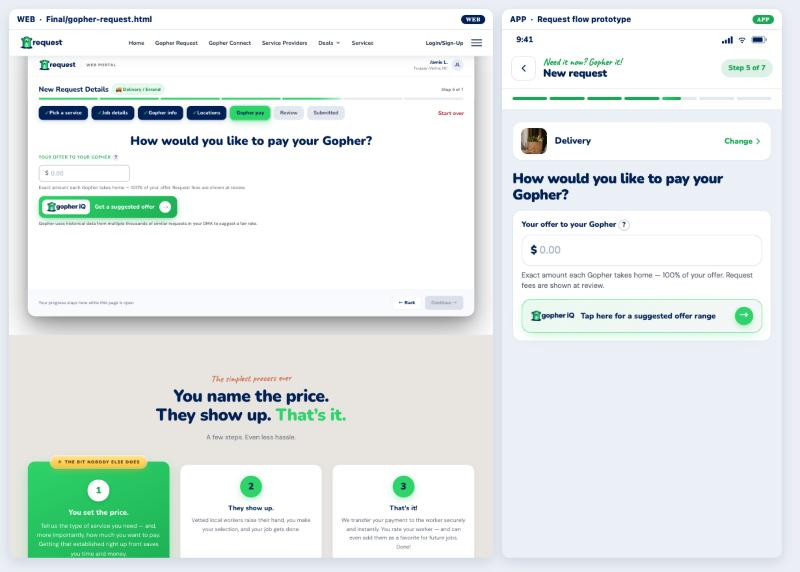
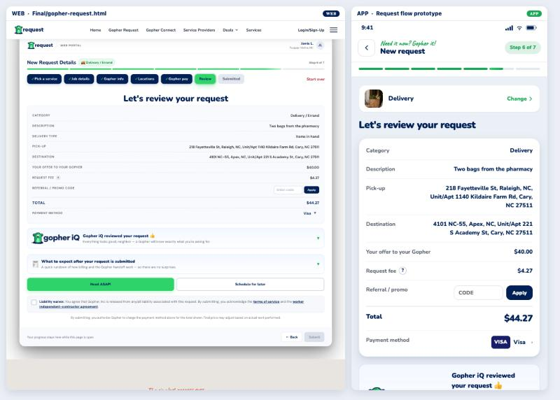
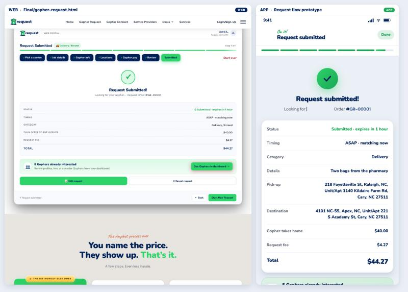

A step-by-step look at the same Delivery request built twice: once in the web portal and once in the app. Captured side by side, same category, same data, same moment in the flow. The point is what the web would need to change to read like the app.
_prototypes/Request/gopher-request-flow.html),
not a screenshot from a handset. It is the artifact the team keeps in step with the app —
the 909 desk’s completed-category packages land there — so it is the best available
stand-in, but it is a stand-in. Anything you decide from it is worth a glance on a real
device before it ships.These are the ones worth deciding once, because they set the character of the whole flow.
| Web | App | |
|---|---|---|
| Surface | One flat white panel holding every section, divided by hairlines. | Separate white cards per section on a tinted ground, with real padding between them. |
| Heading | Centred. | Left-aligned. |
| Type scale | Noticeably smaller throughout — labels, values and body. | Larger and more legible; the step reads at arm’s length. |
| Field labels | Tiny uppercase micro-labels above each field (PICKUP ADDRESS, YOUR OFFER TO YOUR GOPHER). | Normal-case labels inside the card, at readable size. |
| Progress | Seven named chips in a row, plus “Step N of 7” and a red Start over. | A seven-segment bar, plus a “Step N of 7” pill. No start-over. |
| Category | A small chip in the header strip (Delivery / Errand). | A full-width card with a thumbnail and Change ›, present on every step. |
| Primary buttons | Small Back / Continue, right-aligned at the bottom of the panel. | Full-width Back and Continue, pinned to the bottom of the screen. |
| Icons | Emoji in section headers (📍 🏁 🛣). | Drawn glyphs that match the rest of the UI. |
Headings differ: web “Tell us about your delivery / errand request” · app “Tell us about your delivery”.

| Toggle copy | “Slide if this delivery includes Age-restricted items” — an instruction. | “Includes age-restricted items” — a label. |
| Add a pic | Small dashed pill, low in the card. | Full-width dashed card with a green + circle. |
| Section heads | Carry small emoji. | Plain bold text at the top of each card. |
Headings differ: web “How would you like us to find your Gopher?” · app “Who should do the work?”

| Options count | “(3 of 3 options available)” — all three selectable. | “(2 of 3 options available)” — Prioritize MY Gopher(s) greyed, with a line saying why. |
| Rows | Thin single-line rows with small radio dots. | Tall cards; the selected one is tinted green with a green border. |
Headings match: both “Where is this going?”

| Address fields | Uppercase micro-labels above, and “From” / “To” prefixes inside the inputs. | No micro-label; a pin and a flag glyph sit inside the field. |
| Unit / Apt | A second bare input directly under each address. | Same, but clearly its own field inside the card. |
| Distance | Grey strip at the foot of the panel. | Tinted strip with the value in bold. |
Headings match: both “How would you like to pay your Gopher?”

| Offer field | Micro-label YOUR OFFER TO YOUR GOPHER; small input. | Normal label with the ?; large input filling the card. |
| Gopher iQ | Small green pill, “Get a suggested offer”, plus an extra sentence about historical DMA data. | Full-width tinted card, “Tap here for a suggested offer range”, no extra sentence. |
| Hint line | Matches on both — “Exact amount each Gopher takes home — 100% of your offer. Request fees are shown at review.” | |
Headings match: both “Let’s review your request”. This is where the density gap is widest.

| Rows | Dense table, uppercase labels, values right-aligned and small. | Airy rows, normal-case labels, values bold navy. |
| Total | Same size as every other row. | Large and bold — the thing your eye lands on. |
| Payment | Text, “Visa ▾”. | A VISA badge. |
| Timing | Two buttons, Need ASAP / Schedule for later. | Two selectable cards with a line of explanation each. |
Capitalisation differs: web “Request Submitted!” · app “Request submitted!”. The app’s submit button reads Submit request; the web’s reads Submit.

| Summary | Dense table again; Total not emphasised. | Airy card; Total large. |
| Interest | “8 Gophers already interested” strip with a See Gophers in dashboard button. | “5 Gophers already interested” below the summary. |
| Next actions | Edit request / Cancel request, then Back / Start New Request. | A Done pill in the header. |